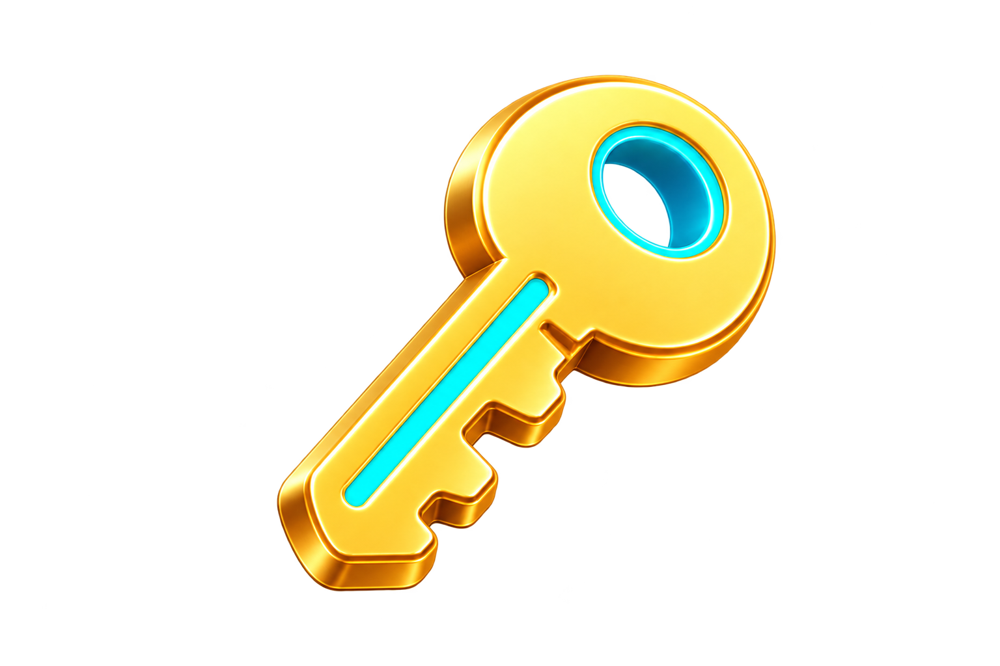

01 / WHAT IS SSH KEY AUTH?
サーバーの南京錠に、手元の鍵を合わせるイメージ。
サーバーには「この鍵の持ち主なら入ってよい」という公開鍵を置き、あなたのPCには対になる秘密鍵を残します。接続するとサーバーがペアかどうかを確認し、合っていれば扉が開きます。秘密鍵そのものをサーバーへ送ることはありません。


秘密鍵
あなた専用の鍵。
PCの中だけで大切に保管します。メール、チャット、GitHub、サーバーへは送りません。

公開鍵
サーバーに置く南京錠側の情報。.pubが付くファイルです。公開鍵だけでは、あなたの秘密鍵を作ったりログインしたりできません。
02 / WHEN IT HELPS
公開中のサイトを、安全にお手入れする入口。
Webサイトは、インターネット上の「サーバー」というコンピューターから表示されています。SSHを使うと、自分のPCからそのサーバーへ安全に入り、サイトの中身を確認したり更新したりできます。
公開中のサイトを直す
HTMLや画像を入れ替えるための、安全な作業ルートとして使えます。
困ったときに中を確認
どのフォルダーに何があるか、エラーが起きていないかを調べられます。
AIに同じ作業を頼む
接続先と「どこまでしてよいか」を決めれば、確認や更新をAIへ頼めます。
SSH接続後の実際
SSHでつながった後は、黒いターミナル画面でLinuxコマンドを使い、文字を手がかりにサーバー内のデータを見ていきます。自分で直接書き換えるには、少しずつコマンドを学ぶ必要があります。
では、なぜ今SSHを知っておくのでしょう？ それは、AIが安全にサーバーへ接続し、Webページやアプリの更新を言葉のやり取りで手伝えるようにするためです。「このページの見出しを直して」と頼める状態に近づける、頼もしい準備になります。大切な変更は、何をするか確認しながら進めましょう。
03 / FIRST TIME SETUP
やることは、最初に一度だけ。4つを順番どおりで大丈夫。
難しい設定を全部覚える必要はありません。①PCで鍵を作る、②公開鍵だけを管理画面に貼る、③秘密鍵はPCの中に置いておく、④接続コマンドを1行入力する。このページ下のシミュレーターで、同じ順番を画面を見ながら練習できます。
初心者でも大丈夫：鍵はコマンド1行で2つ同時に作られます。サーバーへ登録するのは、名前の最後に
.pubが付いた公開鍵だけ。秘密鍵は通常、最初からWindowsの決まった場所に保存されるので、むやみに移動しなくてかまいません。ssh-keygen -t ed25519と入力してEnter。.pubの文字をコピー公開鍵の中身だけを、サーバーの管理画面に貼ります。%USERPROFILE%\.ssh\に保存されます。ssh ユーザー名@ホスト名で接続します。実際のコマンド画面と、言葉の意味を見る
Command Prompt — local PC
C:\Users\あなた> ssh-keygen -t ed25519
Generating public/private ed25519 key pair.
Enter file in which to save the key (C:\Users\あなた\.ssh\id_ed25519):
秘密鍵：C:\Users\あなた\.ssh\id_ed25519
公開鍵：C:\Users\あなた\.ssh\id_ed25519.pub
ssh-keygenSSH用の鍵ペアを作る。
-t鍵の種類を指定する。
ed25519今回使う現代的な鍵種別。
保存場所：コマンドプロンプトで鍵を生成すると、保存先を変更しない限り、鍵は
%USERPROFILE%\.ssh\へ自動的に作られます。どの作業フォルダーから実行しても、既定ではこのフォルダーに保存されます。04 / ZERO-TOUCH WITH AI
SSH公開鍵接続を、ゼロからAIに整えてもらう。
設定ファイルの名前や書き方を覚えなくても大丈夫です。下の「〇〇」を自分のサーバー情報に置き換えて渡すと、情報収集、鍵の作成、接続テスト、次回から使うグローバルスキルの作成まで、順番に依頼できます。
Codex または Claude Codeへ渡す依頼文
# SSH公開鍵接続をゼロから設定し、グローバルスキルにしてください この依頼文は、Codex または Claude Codeへ渡す前提です。 ## 私が分かる情報 ・接続したいサーバーの手がかり：〇〇 例：契約しているサーバー会社、サービス名、サイトのドメインなど ・管理画面URL：〇〇 分からない場合は「分からない」と書きます。 私から最初に渡せる情報は以上です。 あなたは、このパソコンのターミナル、ファイル、利用可能なブラウザ操作機能を使い、SSH公開鍵接続の準備を進めてください。 私はSSHを学び始めたばかりです。専門用語を入力するよう求めるのではなく、管理画面、このパソコン、サーバー会社の公式資料から、必要な情報をできるだけ自分で調べてください。 ## 操作するときの基本ルール ターミナルやファイルの確認など、安全な読み取り操作は自分で進めてください。 画面に操作の承認が表示された場合は、何をする操作なのかを初心者向けに説明し、私が判断できる状態にしてください。 権限確認を省略する危険なモードや、すべての操作を無条件で許可するモードへ勝手に変更しないでください。 ログイン、パスワード、秘密鍵のパスフレーズ、ワンタイムパスワードなど、私が入力する必要がある場面では、入力できる画面を開いた状態で停止し、私に操作を渡してください。 パスワードやパスフレーズをチャットへ書かせたり、保存したり、代わりに入力したりしないでください。 ## 進めてほしい作業 ### 1. このパソコンの状態を確認する このパソコンのOSを確認し、次の機能が使えるか調べてください。 ・ssh ・ssh-keygen ・ssh-agent ・ssh-add 利用できないものがある場合は、勝手にソフトウェアをインストールせず、必要な対応と理由を説明してください。 ### 2. 接続先の情報を調べる 私が書いた「接続したいサーバーの手がかり」から、契約しているサービスを特定してください。 管理画面URLが分からない場合は、サーバー会社の公式サイトから正しい管理画面を探してください。 公式資料と管理画面から、次の情報を調べてください。 ・SSH接続に対応しているか ・SSH接続先のホスト名 ・SSHユーザー名 ・ポート番号 ・利用できるSSH鍵の種類 ・公開鍵を登録する方法 ブラウザへのログインが必要になったら、ログイン画面を開いた状態で停止し、私に操作を渡してください。 ログイン後、ブラウザ操作機能が利用できる場合は、必要な情報を管理画面から確認してください。利用できない場合は、私がどこを見ればよいか、画面上の言葉を使って一つずつ案内してください。 どうしても見つからない情報がある場合だけ、不足項目を一度にまとめて質問してください。 ### 3. SSH鍵を作る サーバーの公式仕様に対応した、安全で一般的なSSH鍵を作成してください。 利用可能ならEd25519を優先してください。対応していない場合は、公式資料を確認して別の鍵を選び、変更理由を説明してください。 鍵は、このサーバー専用だと分かるファイル名にしてください。 既存の鍵を上書きしないでください。同名ファイルが存在する場合は停止し、安全な別名を提案してください。 秘密鍵と公開鍵は、このパソコンの標準的で安全なSSHフォルダーへ保存してください。 秘密鍵のパスフレーズ入力が表示されたら、私がターミナルへ直接入力できる状態で停止してください。 ### 4. 作成した鍵を説明する 鍵を作成したら、次の内容を初心者向けに報告してください。 ・秘密鍵のファイル名と保存場所 ・公開鍵のファイル名と保存場所 ・サーバーへ登録するのは公開鍵であること ・秘密鍵はサーバーやチャットへ送らないこと 秘密鍵の中身は、画面やチャットへ表示しないでください。コピー、送信、アップロードも禁止します。 ### 5. 公開鍵をサーバーへ登録する 公式資料で確認した正しい方法を使い、公開鍵をサーバーへ登録してください。 管理画面から登録できる場合は、公開鍵の登録画面を開いてください。 管理画面へのログインや追加認証が必要な場合は、私が直接入力できる状態で停止してください。 公開鍵の入力欄まで進んだら、作成した公開鍵だけを登録してください。秘密鍵は絶対に登録しないでください。 最初だけSSHパスワード接続が必要な場合は、私がターミナルへ直接パスワードを入力できる状態にして停止してください。 ### 6. 簡単に接続できる設定を作る サーバー名やサイト名をもとに、短く分かりやすいSSH接続名を決めてください。 次回から、その短い名前で接続できるようにSSH設定を作成してください。 既存のSSH設定ファイルがある場合は全面的に上書きせず、変更前にバックアップを作成してください。今回のサーバーに必要な設定だけを追加してください。 設定した短い接続名を私に報告してください。 ### 7. 必要ならssh-agentを設定する 秘密鍵を安全に利用するために必要であれば、現在のOSに合ったssh-agentを設定してください。 管理者権限やOSの設定変更が必要な場合は、変更内容と影響を説明し、私の承認を待ってください。 秘密鍵のパスフレーズが必要な場合は、私がターミナルへ直接入力します。 ### 8. 初回接続を確認する 初めての接続で「ホスト鍵の指紋」が表示された場合は、自動で承認しないでください。 これは「接続先が本物のサーバーか」を確認する情報だと、初心者向けに説明してください。 サーバー会社の公式資料や管理画面で確認できる場合は照合してください。確認できない場合は、何を確認すべきか示し、私の承認を待ってください。 ### 9. 接続テストをする 公開鍵を使ってSSH接続を試してください。 接続できたら、最初は次の確認だけを実行してください。 ・whoami ・hostname ・pwd 正しいユーザーとサーバーへ接続できたかを報告し、その後はexitで切断してください。 この時点では、サーバー上のファイルをアップロード、上書き、移動、削除しないでください。デプロイ、設定変更、権限変更、再起動、データベース操作もしないでください。 ### 10. ゼロタッチ接続を確認する 作成した短い接続名を使ってもう一度接続してください。 毎回サーバーのログインパスワードを入力せずに接続できることを確認してください。 失敗した場合は、設定をむやみに作り直さず、原因と修正案を説明してください。 成功した場合は「SSH公開鍵によるゼロタッチ接続に成功した」と報告してください。 ### 11. グローバルスキルを作る 接続に成功したら、現在使っているアプリが正式に対応しているユーザー共通のスキル形式で、どのプロジェクトからでも利用できるグローバルスキルを作成してください。 スキル名は、サーバーやサイトの名前から、短く分かりやすい名前を考えてください。 スキルには次の内容を記録してください。 ・このサーバーへ接続するときの短いSSH接続名 ・接続直後に接続先を確認する手順 ・秘密鍵の中身を表示しないルール ・作業終了時にexitで切断するルール ・サーバーを変更する操作の前に許可を求めるルール スキルには次の情報を保存しないでください。 ・秘密鍵の中身 ・パスワード ・秘密鍵のパスフレーズ ・ワンタイムパスワード ・管理画面のログイン情報 ・ブラウザに保存された認証情報 作成後、そのスキルが別のプロジェクトから認識される場所に保存されていることを確認してください。 ### 12. 今後の動作ルールをスキルへ入れる 今後、私が「〇〇のサーバーに接続してください」と言ったら、このグローバルスキルを使用して接続してください。 接続、現在地の確認、ファイル一覧の確認、ログの読み取りなど、サーバーを変更しない操作は進めてかまいません。 次の操作は、対象、変更内容、影響範囲を示し、私の許可を得てから実行するルールにしてください。 ・アップロード ・上書き ・移動 ・削除 ・デプロイ ・権限変更 ・設定変更 ・再起動 ・データベースの変更 ### 13. 最後に報告する すべて完了したら、次の内容を初心者向けにまとめてください。 ・利用したサーバー会社またはサービス ・確認した公式資料 ・作成した秘密鍵と公開鍵の保存場所 ・公開鍵を登録した場所 ・設定したSSH接続名 ・接続テストの結果 ・ゼロタッチ接続が成功したか ・作成したグローバルスキルの名前 ・グローバルスキルの保存場所 ・現在使っているアプリがスキルを認識できること ・次回から私が使う短い依頼文 ・PCを買い替えた場合や秘密鍵を紛失した場合の注意点
最初に埋めるのは「接続したいサーバーの手がかり」と「管理画面URL」だけです。URLが分からなければ、そのまま「分からない」と書いて渡せます。
ゼロタッチとは、次回から接続コマンドやログインパスワード入力をできるだけ省けるという意味です。サーバーを変更する操作まで無確認で許可する意味ではありません。